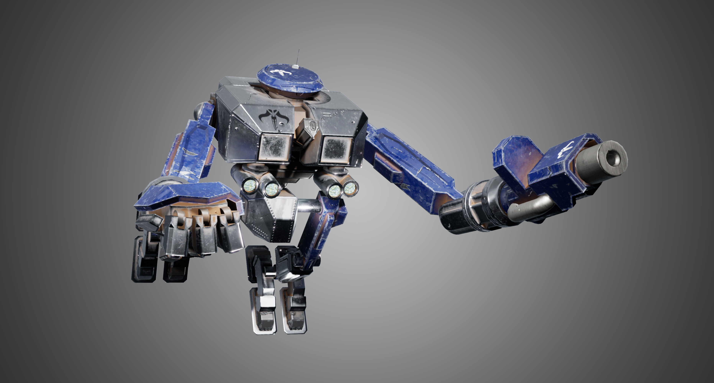

Optimizing, texturing and rigging a premade model
The goal
In this project, the goals were to optimize a high poly model, getting ahold of the program Substance Painter and the process of texturing with PBR materials and finally, rigging the model so that it's ready to be posed for a render.
The process
The process went as follows:
- A high poly model was used to bake a normalmap.
- The high poly model was then reduced to a low poly version.
- The normalmap and the lower poly model were then imported in Substance Painter.
- Changes on the normal, metallic, diffuse, opacity - and heightmap such as paint, stamps, dents, bulletholes and relief patterns were applied.
- All textures were then import in Unreal Engine 4 along with the optimized model.
- A pose was set up and renders were taken.
Results and take aways
While it's not the point of being the best in this task, it's a plus to understand the pipeline of optimizing a model and (trying) to make it look as good as you can. Whenever you will work with artists, you will have a general idea of how long something could take, making communication all the better.
